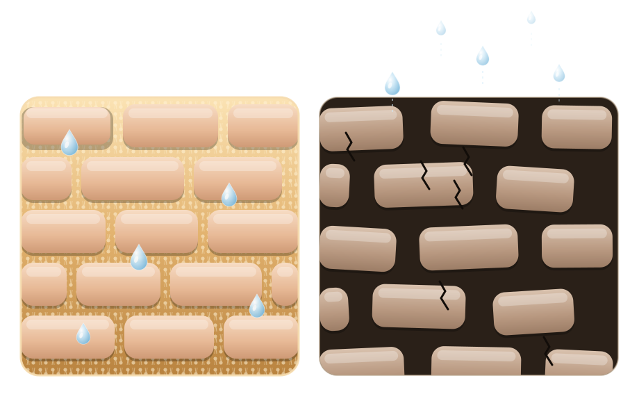

02 / 04
THE SCIENCE
Ceramides are the cement

WITH CERAMIDES
WITHOUT
Sealed barrier
water stays in
water stays in
Gaps in the barrier
water escapes · rough skin
water escapes · rough skin
PorCerAmid by Theo Marvée delivers ceramides right where your skin needs them, rebuilding the barrier from within.
→